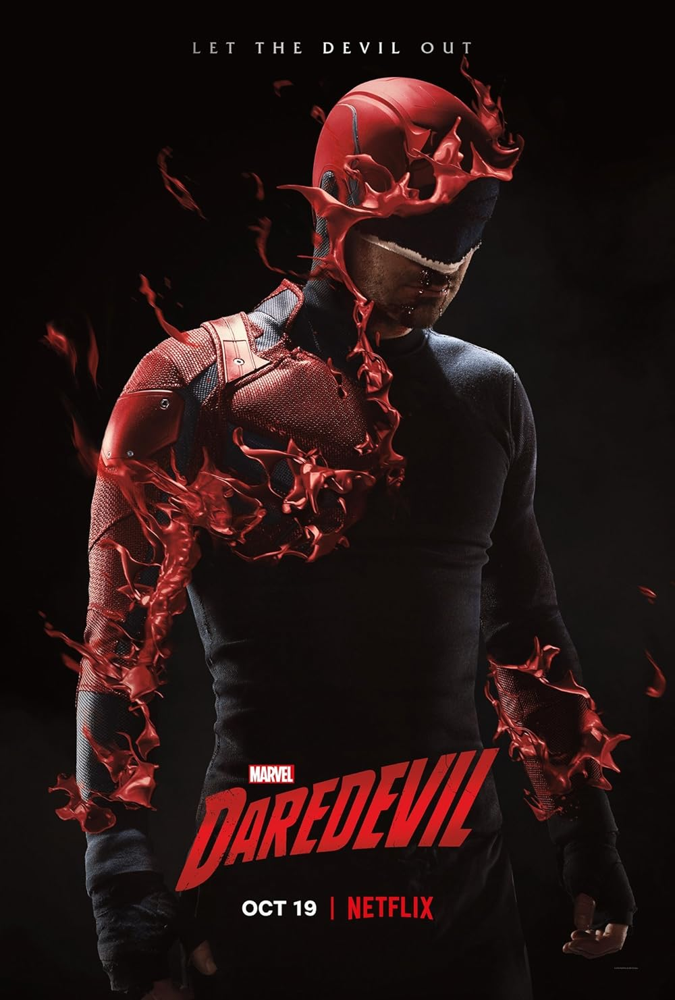

I'm a Rutgers University student studying computer science. I've had a love for technology and it's inner workings for as long as I can remember. Thus, my love for computer science. I'm eager to contribute creativity and analytical problemsolving to an innovative team. I love to think outside the box and find it rewarding to create intuitive digital experiences.
Coding languages I know: Java, C, HTML, CSS. I'm currently learning JavaScript.
More information about me and my interests: I'm currently working at an Apple store and love it! It's taught me a lot about how to innovate an experience and what can be achieved through collaboration. I'm a also huge fan of music, movies, and video games. I also love going to the gym.
In general, I love the art of storytelling. Here are just a few of my favorite shows, and movies:

Favorite Show: Daredevil
Favorite Movie: Spider-Man 2
Favorite Album: To Pimp A Butterfly
Favorite Song: Sing About Me, I'm Dying of Thirst
Favorite Show: Daredevil
Favorite Movie: Spider-Man 2
Favorite Album: To Pimp A Butterfly
Favorite Song: Sing About Me, I'm Dying of Thirst
Here is one of my favorite TEDx Talks. It helped me feel like I had a place in computer science.